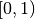
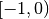
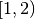
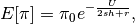
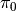
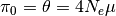
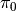
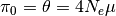
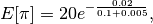

Example: background selection¶
Setting up the simulation¶
- Neutral mutations will occur on the interval .
- Strongly-deleterious mutations will occur on the intervals  and .
- Recombination will be uniform throughout the region.
#Use Python 3's print a a function.
#This future-proofs the code in the notebook
from __future__ import print_function
#Import fwdpy. Give it a shorter name
import fwdpy as fp
##Other libs we need
import numpy as np
import pandas as pd
import math
Establishing ‘regions’ for mutation and recombination¶
# Where neutral mutations occur:
nregions = [fp.Region(beg=0,end=1,weight=1)]
# Where selected mutations occur:
sregions = [fp.ConstantS(beg=-1,end=0,weight=1,s=-0.05,h=1),
fp.ConstantS(beg=1,end=2,weight=1,s=-0.05,h=1)]
# Recombination:
recregions = [fp.Region(beg=-1,end=2,weight=1)]
Population size and simulation length¶
#Population size
N=1000
#We'll evolve for 10N generations.
#nlist is a list of population sizes over time.
#len(nlist) is the length of the simulation
#We use numpy arrays for speed and optimised RAM
#use. Note the dtype=np.uint32, which means 32-bit
#unsigned integer. Failure to use this type will
#cause a run-time error.
nlist = np.array([N]*10*N,dtype=np.uint32)
#Initalize a random number generator with seed value of 101
rng = fp.GSLrng(101)
#Simulate 40 replicate populations. This uses C++11 threads behind the scenes:
pops = fp.evolve_regions(rng, #The random number generator
40, #The number of pops to simulate = number of threads to use.
N, #Initial population size for each of the 40 demes
nlist[0:], #List of population sizes over time.
0.005, #Neutral mutation rate (per gamete, per generation)
0.01, #Deleterious mutation rate (per gamete, per generation)
0.005, #Recombination rate (per diploid, per generation)
nregions, #Defined above
sregions, #Defined above
recregions)#Defined above
#Now, pops is a Python list with len(pops) = 40
#Each element's type is fwdpy.singlepop
print(len(pops))
print(type(pops[0]))
40
<type 'fwdpy.fwdpy.Spop'>
Taking samples from simulated populations¶
#Use a list comprehension to get a random sample of size
#n = 20 from each replicate
samples = [fp.get_samples(rng,i,20) for i in pops]
#Samples is now a list of tuples of two lists.
#Each list contains tuples of mutation positions and genotypes.
#The first list represents neutral variants.
#The second list represents variants affecting fitness ('selected' variants)
#We will manipulate/analyze these genotypes, etc.,
#in a later example
for i in samples[:4]:
print ("A sample from a population is a ",type(i))
print(len(samples))
A sample from a population is a <type 'tuple'>
A sample from a population is a <type 'tuple'>
A sample from a population is a <type 'tuple'>
A sample from a population is a <type 'tuple'>
40
Getting additional information about samples¶
#Again, use list comprehension to get the 'details' of each sample
#Given that each object in samples is a tuple, and that the second
#item in each tuple represents selected mutations, i[1] in the line
#below means that we are getting the mutation information only for
#selected variants
details = [pd.DataFrame(fp.get_sample_details(i[1],j)) for i,j in zip(samples,pops)]
#details is now a list of pandas DataFrame objects
#Each DataFrame has the following columns:
# a: mutation age (in generations)
# h: dominance of the mutation
# p: frequency of the mutation in the population
# s: selection coefficient of the mutation
# label: A label applied for mutations for each region. Here, I use 0 for all regions
for i in details[:4]:
print(i)
dcount ftime generation h label locus origin p s
0 1 4294967295 10000 1.0 0 0 9974 0.004 -0.05
dcount ftime generation h label locus origin p s
0 1 4294967295 10000 1.0 0 0 9976 0.0090 -0.05
1 1 4294967295 10000 1.0 0 0 9939 0.0090 -0.05
2 1 4294967295 10000 1.0 0 0 9957 0.0030 -0.05
3 1 4294967295 10000 1.0 0 0 9991 0.0005 -0.05
4 1 4294967295 10000 1.0 0 0 9946 0.0040 -0.05
5 1 4294967295 10000 1.0 0 0 9996 0.0035 -0.05
dcount ftime generation h label locus origin p s
0 1 4294967295 10000 1.0 0 0 9984 0.0035 -0.05
1 1 4294967295 10000 1.0 0 0 9975 0.0015 -0.05
2 1 4294967295 10000 1.0 0 0 9983 0.0020 -0.05
3 1 4294967295 10000 1.0 0 0 9998 0.0010 -0.05
4 1 4294967295 10000 1.0 0 0 9940 0.0045 -0.05
dcount ftime generation h label locus origin p s
0 1 4294967295 10000 1.0 0 0 9990 0.0045 -0.05
1 2 4294967295 10000 1.0 0 0 9953 0.0300 -0.05
2 1 4294967295 10000 1.0 0 0 9968 0.0035 -0.05
3 1 4294967295 10000 1.0 0 0 9987 0.0005 -0.05
#The order of the rows in each DataFrame is the
#same as the order as the objects in 'samples':
for i in range(4):
print("Number of sites in samples[",i,"] = ",
len(samples[i][1]),". Number of rows in DataFrame ",i,
" = ",len(details[i].index),sep="")
Number of sites in samples[0] = 1. Number of rows in DataFrame 0 = 1
Number of sites in samples[1] = 6. Number of rows in DataFrame 1 = 6
Number of sites in samples[2] = 5. Number of rows in DataFrame 2 = 5
Number of sites in samples[3] = 4. Number of rows in DataFrame 3 = 4
#Pandas DataFrames are cool.
#Let's add a column to each DataFrame
#specifying the mutation position,
#count of derived state,
#and a "replicate ID"
for i in range(len(details)):
##samples[i][1] again is the selected mutations in the sample taken
##from the i-th replicate
details[i]['pos']=[x[0] for x in samples[i][1]] #Mutation position
details[i]['count']=[ x[1].count('1') for x in samples[i][1]] #No. occurrences of derived state in sample
details[i]['id']=[i]*len(details[i].index) #Replicate id
##Merge into 1 big DataFrame:
BigTable = pd.concat(details)
print("This is the merged table:")
print(BigTable)
This is the merged table:
dcount ftime generation h label locus origin p s 0 1 4294967295 10000 1.0 0 0 9974 0.0040 -0.05
0 1 4294967295 10000 1.0 0 0 9976 0.0090 -0.05
1 1 4294967295 10000 1.0 0 0 9939 0.0090 -0.05
2 1 4294967295 10000 1.0 0 0 9957 0.0030 -0.05
3 1 4294967295 10000 1.0 0 0 9991 0.0005 -0.05
4 1 4294967295 10000 1.0 0 0 9946 0.0040 -0.05
5 1 4294967295 10000 1.0 0 0 9996 0.0035 -0.05
0 1 4294967295 10000 1.0 0 0 9984 0.0035 -0.05
1 1 4294967295 10000 1.0 0 0 9975 0.0015 -0.05
2 1 4294967295 10000 1.0 0 0 9983 0.0020 -0.05
3 1 4294967295 10000 1.0 0 0 9998 0.0010 -0.05
4 1 4294967295 10000 1.0 0 0 9940 0.0045 -0.05
0 1 4294967295 10000 1.0 0 0 9990 0.0045 -0.05
1 2 4294967295 10000 1.0 0 0 9953 0.0300 -0.05
2 1 4294967295 10000 1.0 0 0 9968 0.0035 -0.05
3 1 4294967295 10000 1.0 0 0 9987 0.0005 -0.05
0 1 4294967295 10000 1.0 0 0 9992 0.0010 -0.05
1 1 4294967295 10000 1.0 0 0 9908 0.0125 -0.05
2 1 4294967295 10000 1.0 0 0 9997 0.0010 -0.05
3 1 4294967295 10000 1.0 0 0 9999 0.0005 -0.05
4 1 4294967295 10000 1.0 0 0 9981 0.0065 -0.05
5 1 4294967295 10000 1.0 0 0 9997 0.0010 -0.05
0 1 4294967295 10000 1.0 0 0 9987 0.0025 -0.05
1 1 4294967295 10000 1.0 0 0 9864 0.0130 -0.05
2 1 4294967295 10000 1.0 0 0 9938 0.0035 -0.05
3 1 4294967295 10000 1.0 0 0 9990 0.0015 -0.05
4 1 4294967295 10000 1.0 0 0 9977 0.0075 -0.05
0 1 4294967295 10000 1.0 0 0 9983 0.0025 -0.05
1 1 4294967295 10000 1.0 0 0 9981 0.0120 -0.05
2 1 4294967295 10000 1.0 0 0 9993 0.0050 -0.05
.. ... ... ... ... ... ... ... ... ...
0 1 4294967295 10000 1.0 0 0 9959 0.0060 -0.05
1 1 4294967295 10000 1.0 0 0 9980 0.0080 -0.05
2 1 4294967295 10000 1.0 0 0 9975 0.0040 -0.05
3 1 4294967295 10000 1.0 0 0 9976 0.0095 -0.05
4 1 4294967295 10000 1.0 0 0 9990 0.0005 -0.05
0 1 4294967295 10000 1.0 0 0 9998 0.0010 -0.05
1 1 4294967295 10000 1.0 0 0 9993 0.0030 -0.05
2 1 4294967295 10000 1.0 0 0 9958 0.0075 -0.05
0 1 4294967295 10000 1.0 0 0 9978 0.0035 -0.05
1 1 4294967295 10000 1.0 0 0 9959 0.0125 -0.05
2 1 4294967295 10000 1.0 0 0 9984 0.0065 -0.05
3 1 4294967295 10000 1.0 0 0 9985 0.0020 -0.05
4 1 4294967295 10000 1.0 0 0 9982 0.0065 -0.05
0 1 4294967295 10000 1.0 0 0 9988 0.0020 -0.05
1 1 4294967295 10000 1.0 0 0 9992 0.0005 -0.05
2 1 4294967295 10000 1.0 0 0 9988 0.0070 -0.05
3 1 4294967295 10000 1.0 0 0 9982 0.0020 -0.05
4 1 4294967295 10000 1.0 0 0 9975 0.0020 -0.05
5 1 4294967295 10000 1.0 0 0 9976 0.0075 -0.05
0 1 4294967295 10000 1.0 0 0 9991 0.0110 -0.05
1 1 4294967295 10000 1.0 0 0 9985 0.0040 -0.05
0 1 4294967295 10000 1.0 0 0 9996 0.0035 -0.05
1 1 4294967295 10000 1.0 0 0 9992 0.0060 -0.05
2 1 4294967295 10000 1.0 0 0 9998 0.0010 -0.05
3 1 4294967295 10000 1.0 0 0 9982 0.0165 -0.05
0 1 4294967295 10000 1.0 0 0 9978 0.0030 -0.05
1 1 4294967295 10000 1.0 0 0 9981 0.0035 -0.05
2 1 4294967295 10000 1.0 0 0 9993 0.0020 -0.05
3 2 4294967295 10000 1.0 0 0 9986 0.0095 -0.05
4 1 4294967295 10000 1.0 0 0 9998 0.0015 -0.05
pos count id
0 1.283749 1 0
0 -0.320125 1 1
1 -0.119514 1 1
2 -0.102664 1 1
3 1.042025 1 1
4 1.443235 1 1
5 1.804796 1 1
0 -0.632548 1 2
1 -0.460367 1 2
2 -0.119099 1 2
3 -0.055915 1 2
4 1.587909 1 2
0 -0.480663 1 3
1 -0.354161 2 3
2 1.351797 1 3
3 1.381058 1 3
0 -0.897565 1 4
1 -0.751551 1 4
2 -0.123021 1 4
3 -0.088541 1 4
4 1.242531 1 4
5 1.813220 1 4
0 -0.438263 1 5
1 -0.243305 1 5
2 -0.196773 1 5
3 1.483931 1 5
4 1.723836 1 5
0 -0.818220 1 6
1 -0.323753 1 6
2 -0.047837 1 6
.. ... ... ..
0 -0.923395 1 33
1 -0.880657 1 33
2 -0.501588 1 33
3 1.434086 1 33
4 1.897750 1 33
0 -0.521129 1 34
1 -0.083328 1 34
2 1.777795 1 34
0 -0.703952 1 35
1 -0.385990 1 35
2 1.091824 1 35
3 1.257222 1 35
4 1.772582 1 35
0 -0.595274 1 36
1 -0.499114 1 36
2 -0.416441 1 36
3 -0.320007 1 36
4 1.178538 1 36
5 1.530433 1 36
0 -0.941568 1 37
1 -0.498442 1 37
0 -0.221834 1 38
1 1.537788 1 38
2 1.738061 1 38
3 1.994364 1 38
0 -0.983060 1 39
1 -0.475971 1 39
2 -0.105493 1 39
3 1.197116 2 39
4 1.257867 1 39
[143 rows x 12 columns]
Summary statistics from samples¶
We will use the pylibseq package to calculate summary statistics. pylibseq is a Python wrapper around libsequence.
import libsequence.polytable as polyt
import libsequence.summstats as sstats
#Convert neutral mutations into libsequence "SimData" objects,
#which are intended to handle binary (0/1) data like
#what comes out of these simulations
n = [polyt.SimData(i[0]) for i in samples]
#Create "factories" for calculating the summary stats
an = [sstats.PolySIM(i) for i in n]
##Collect a bunch of summary stats into a pandas.DataFrame:
NeutralMutStats = pd.DataFrame([ {'thetapi':i.thetapi(),'npoly':i.numpoly(),'thetaw':i.thetaw()} for i in an ])
NeutralMutStats
| npoly | thetapi | thetaw | |
|---|---|---|---|
| 0 | 48 | 12.636842 | 13.529741 |
| 1 | 49 | 12.563158 | 13.811611 |
| 2 | 97 | 35.968421 | 27.341352 |
| 3 | 50 | 12.921053 | 14.093481 |
| 4 | 68 | 17.015789 | 19.167134 |
| 5 | 32 | 8.584211 | 9.019828 |
| 6 | 65 | 18.905263 | 18.321525 |
| 7 | 63 | 20.036842 | 17.757786 |
| 8 | 90 | 28.968421 | 25.368265 |
| 9 | 45 | 12.452632 | 12.684133 |
| 10 | 47 | 12.242105 | 13.247872 |
| 11 | 71 | 20.752632 | 20.012742 |
| 12 | 69 | 19.900000 | 19.449003 |
| 13 | 59 | 10.900000 | 16.630307 |
| 14 | 52 | 14.494737 | 14.657220 |
| 15 | 51 | 16.563158 | 14.375350 |
| 16 | 58 | 14.500000 | 16.348437 |
| 17 | 83 | 29.478947 | 23.395178 |
| 18 | 70 | 25.689474 | 19.730873 |
| 19 | 49 | 15.473684 | 13.811611 |
| 20 | 76 | 23.847368 | 21.422090 |
| 21 | 53 | 7.784211 | 14.939089 |
| 22 | 46 | 14.315789 | 12.966002 |
| 23 | 83 | 27.100000 | 23.395178 |
| 24 | 59 | 17.157895 | 16.630307 |
| 25 | 51 | 14.778947 | 14.375350 |
| 26 | 85 | 20.984211 | 23.958917 |
| 27 | 48 | 12.915789 | 13.529741 |
| 28 | 43 | 9.763158 | 12.120393 |
| 29 | 50 | 12.063158 | 14.093481 |
| 30 | 53 | 8.421053 | 14.939089 |
| 31 | 86 | 26.073684 | 24.240787 |
| 32 | 38 | 10.889474 | 10.711045 |
| 33 | 53 | 13.236842 | 14.939089 |
| 34 | 57 | 9.842105 | 16.066568 |
| 35 | 51 | 11.831579 | 14.375350 |
| 36 | 91 | 29.989474 | 25.650135 |
| 37 | 68 | 18.752632 | 19.167134 |
| 38 | 79 | 23.105263 | 22.267699 |
| 39 | 92 | 27.031579 | 25.932004 |
The average  under the model¶
under the model¶
Under the BGS model, the expectation of is
  is the mutation rate
to strongly-deleterious variants,  is the value expected in
the absence of BGS (i.e. ),
is the mutation rate
to strongly-deleterious variants,  is the value expected in
the absence of BGS (i.e. ),  and
and  are the selection and dominance coefficients, and
are the selection and dominance coefficients, and
 is the recombination rate.
is the recombination rate.
Note that the definition of is per diploid, meaning twice
the per gamete rate. (See Hudson and Kaplan (1995) PMC1206891 for
details).
For our parameters, we have  which equals:
print(20*math.exp(-0.02/(0.1+0.005)))
16.5313087525
Now, let’s get the average from 1000 simulated replicates.
We already have 40 replicates that we did above, so we’ll run another 24
sets of four populations.
We will use standard Python to grow our collection of summary statistics.
for i in range(0,24,1):
pops = fp.evolve_regions(rng,
40,
N,
nlist[0:],
0.005,
0.01,
0.005,
nregions,
sregions,
recregions)
samples = [fp.get_samples(rng,i,20) for i in pops]
simdatasNeut = [polyt.SimData(i[0]) for i in samples]
polySIMn = [sstats.PolySIM(i) for i in simdatasNeut]
##Append stats into our growing DataFrame:
NeutralMutStats=pd.concat([NeutralMutStats,
pd.DataFrame([ {'thetapi':i.thetapi(),
'npoly':i.numpoly(),
'thetaw':i.thetaw()} for i in polySIMn ])])
Getting the mean diversity¶
We’ve collected everything into a big pandas DataFrame. We can easily get the mean using the built-in groupby and mean functions.
For users happier in R, you could write this DataFrame to a text file and process it using R’s dplyr package, which is a really excellent tool for this sort of thing.
#Get means for each column:
NeutralMutStats.mean(0)
npoly 58.571000
thetapi 16.319800
thetaw 16.509385
dtype: float64
The ‘thetapi’ record is our mean from all of the
simulations, and it is quite close to the theoretical value.